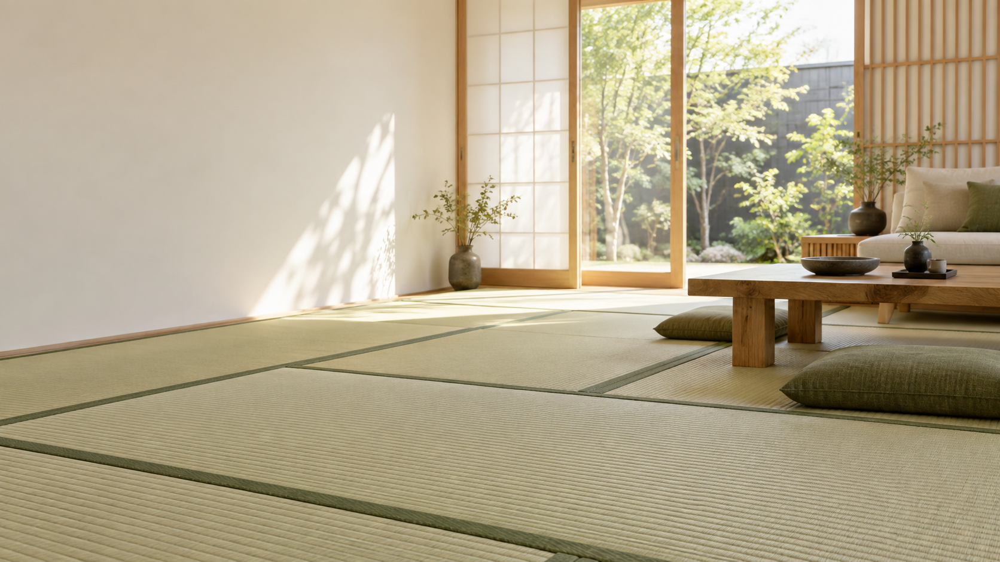
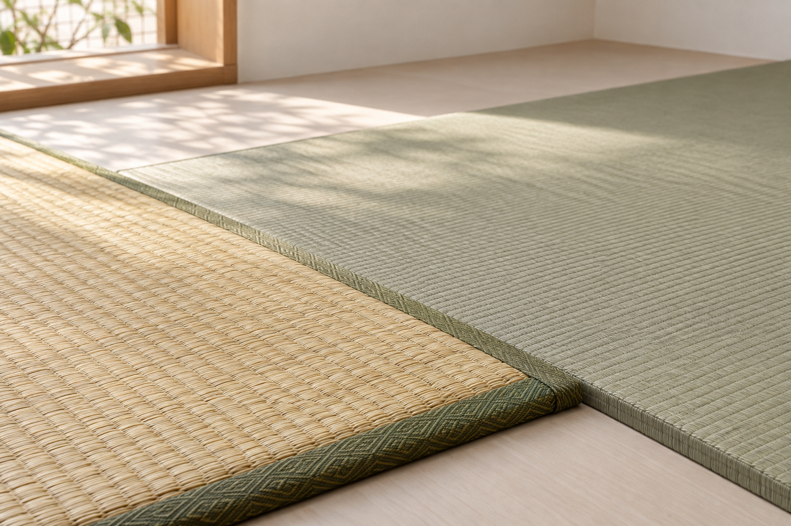
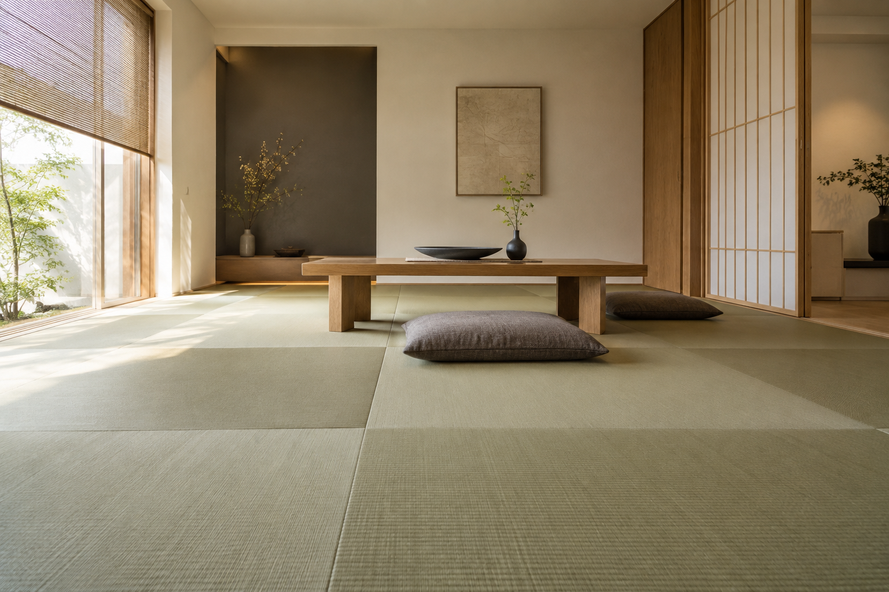

畳
- 畳製造
- 天然い草
- 和紙畳
- 美草
- 置き畳
- 畳床
- ヘリ無し畳
- モダン乱敷

提案用イメージTATAMI FOR YOUR LIFE
鶴田畳店では、畳をはじめ、襖・障子・網戸など住まいに関する施工を取り扱っています。
電話で問い合わせる TEL 092-622-0558ABOUT
伝統的な畳から、現代の住空間に合わせた選択肢まで。
鶴田畳店では、天然い草、和紙畳、美草、置き畳、ヘリ無し畳など、複数の畳商品を取り扱っています。
SERVICE
取り扱っている施工・商品を、5つに分けてご案内します。
TATAMI / PRODUCTS
住まいや空間に合わせて、取り扱い商品の中からご検討いただけます。

提案用イメージ掲載写真はWeb制作提案用イメージです。

施工イメージWORKS
一般住宅・店舗・マンション等の施工・納品例
掲載写真はWeb制作提案用イメージです。実際の施工写真ではありません。CRAFTSMAN / QUALIFICATION
代表
CONTACT
SHOP INFORMATION
鶴田畳店